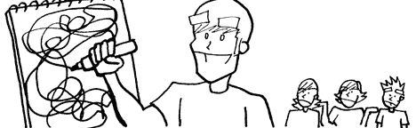
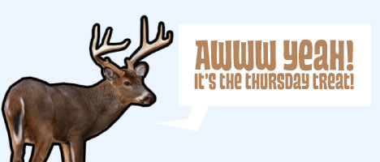
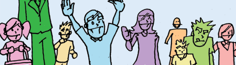
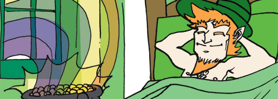
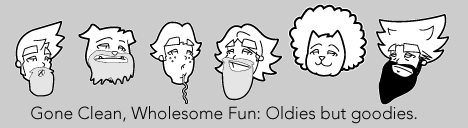
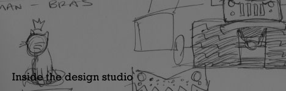
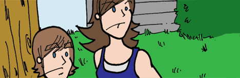

Thursday Treat | Spring 2008
Yeah, UMMM, What Is That?
Yeah, uh, your drawing skills, not the best. Maybe you should doodle a bit more instead of playing all of those video games. See what I mean.
Spring, Road Salt, and Your Vehicle...
Awwww yeah the Thursday Treat indeed. This one is auto-biographical. Check it out.
Easter? Already?
Yeah, it's Easter already, two weeks early. I don't know if it's such a good idea. See what I mean here.
Don't forget to check out 2007's Easter Treat. While you're at it, check out 2006's Easter Treat as well.
St. Pats 2008 Edition
Well it must be in or around St. Pats because I have it marked to make a cartoon celebrating the uh...celebration. It addresses overconsumption on the day, the following comic lets you know if you may have had too much. Here it is (be careful). Also, because it is just as awesome, check out last years St. Pat's cartoon (totally safe).
When a Good Deed Takes a Wrong Turn

Did you read that heart touching story of the sea turtle that got the artificial limb to get it back on its feet? Well this is about that, say if it somehow just went horribly horribly wrong. It's a little comic titled "Worst Case Scenario."
*Editor's Note. Early feedback I got on this one I guess people are trying to read too much into it. Don't. It's just supposed to be random, a little nonsensical and of course stupid. Think of this one as waking up in the morning and not thinking it would end like that. Enjoy.
The Doc's a Bit of a Hard Ass These Days

It's just that time a year when a dude has to make unusual amounts of trips for Dr.'s appointments, eye appointments, yearly check ups, you know, what have you. I noticed, while waiting for the doc, the little reminder posters have taken a bit of a hard ass approach. Check out a couple I found.
Gone Clean, Wholesome Fun, a Small Retrospective
Why make new cartoons when you probably haven't even seen the old ones? Well, that's the case for this week's Treat. Not lack of enthusiasm or ideas but lack of time is the case for this installment. So enjoy this collection of "oldie but goodie" Gone Clean, Wholesome Fun comics. Just think of it as a re-run of your favorite show.
Valentines 2008. Yup. Deal With It.
"Singles Awareness Day", "Valentines Day", or whatever you want to call it, an exchange of cards is in order. Now it's impossible to cater to ALL shapes and sizes, but I try. In the meantime enjoy these half-assed valentine card designs for a select few peeps. Check em out here.
Logos and slogans, OH MY!
Logos make the world go round. With that said, I'd thought I'd take a break from the usally toons and share some of my most recent logo projects. I'm also trying my hand at writing copy for the marketing too. Check it out!!!
Da Terminator...s
I really like the new Terminator show, and guessing by the viewing numbers it gets, so do you. But I'm admittedly not sure on how long the show's storyline will last. So to help the cause I created my own Terminator models to hunt down John and Sarah Connor and oppress the human race. Read all about it here.
Beards...
Since Letterman and Conan came back on the air with beards, showing solidarity with the writers on strike, I kind of wondered how some other of our favorite TV personalities would look with beards. So sit back, and let the treat dazzle you with an animation of them donning some beardage. You don't really care you say? Well by all means, don't look at this!
The Thursday Treat is Affected by the Writer's Strike...
Yup, that's right, the Writer's striketh back on the Treat as well. So this week I provide only the visuals, but you get to think of the caption. (Keep it a secret, I wrote a caption without my writers, just hover over the image, shhhh, it's out little secret). Strike on here.
Vote Me, This January 3rd
Man, there's nothing I can't stand more than politics. And in 2008's presidential race there's a lion share of blow-hards and incompetant candidates. Considering basically everyone else is running, and it's my birthday, I thought, why don't I run? Read up on my campaign notes here.